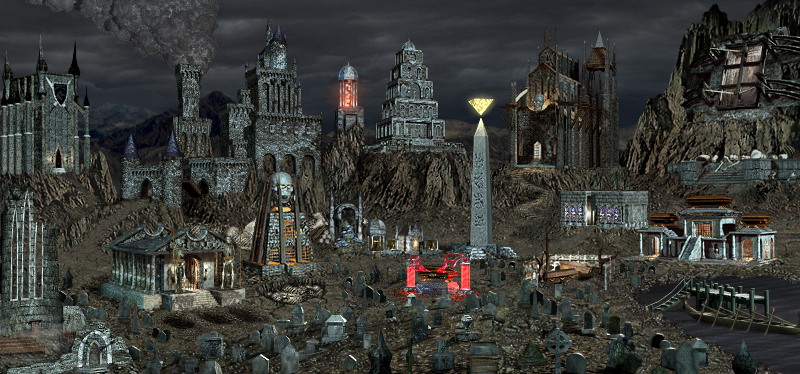
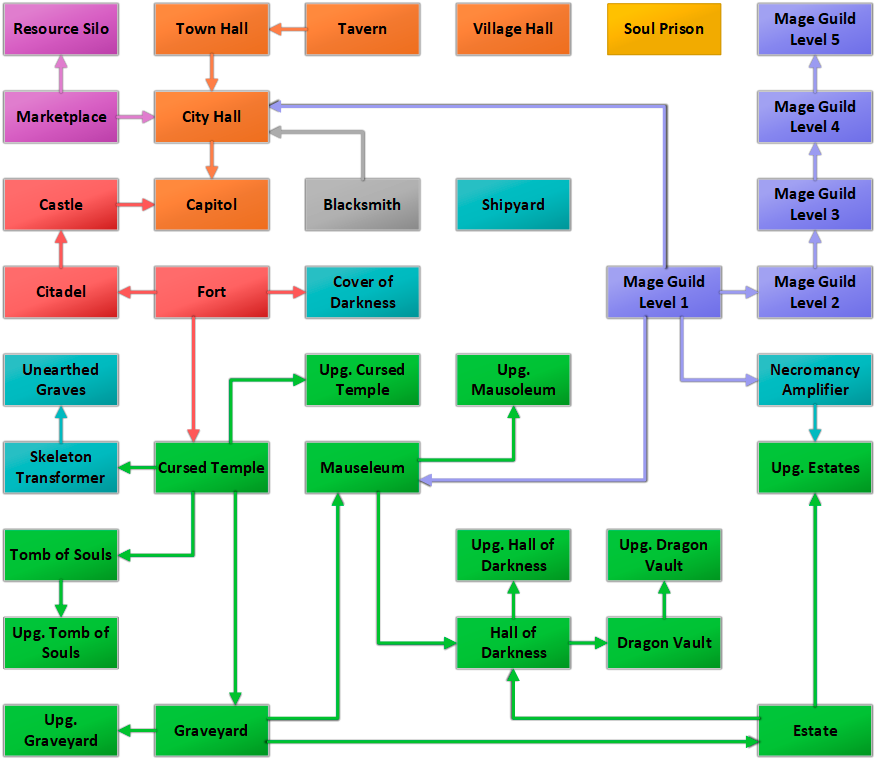

Heroes Of Might And Magic 3 Portfolio Site - WORK IN PROGRESS
Necropolis is an evil alignment town with necromancer and death knight hero classes. Necropolis represents Deyja.
"Necropolis towns are overrun and ruled by undead creatures. They are the natural bases for the Necromancer and Death Knight hero types. Necropolis armies have many units with abilities to weaken their opponents. This quickly gives them an edge over equal or even more powerful enemy armies."

Necropolis creature dwellings
- Cursed Temple - (Skeleton, Skeleton Warrior)
- Graveyard - (Walking Dead, Zombie)
- Tomb of Souls - (Wight, Wraith)
- Estate - (Vampire, Vampire Lord)
- Mausoleum - (Lich, Power Lich)
- Hall of Darkness - (Black Knight, Dread Knight)
- Dragon Vault - (Bone Dragon, Ghost Dragon)
Necropolis specific buildings
- Cover of Darkness - creates unexplored area of 20 tile radius around the town for opposing players
- Necromancy Amplifier - (unique building, increases Necromancy skill of all player's heroes by 10% (5% in Horn of the Abyss) Horn of the Abyss, stacks with each city)
- Skeleton Transformer - (unique building, which transfroms any creature into Skeleton, or, in case of Dragons, Hydras and Sea Serpents Horn of the Abyss - into Bone Dragon)
- Shipyard - (allows to buy boats)
- Soul Prison - (Grail building, +20% Necromancy skill for allied heroes, +5k gold per day, +50% creature growth)
- Unearthed Graves - (Skeleton horde building, +6/week)
Necropolis building tree

Town names
| Agony |
Blackquarter |
Blight |
Cessacioun |
| Coldreign |
Coldsoul |
Death's Gate |
Dark Cloud |
| Dark Eternal |
Ghostwind |
Grave Raven |
Haunt's Wind |
| Sanctum |
Shadow Keep |
Terminus |
Worm Warren |